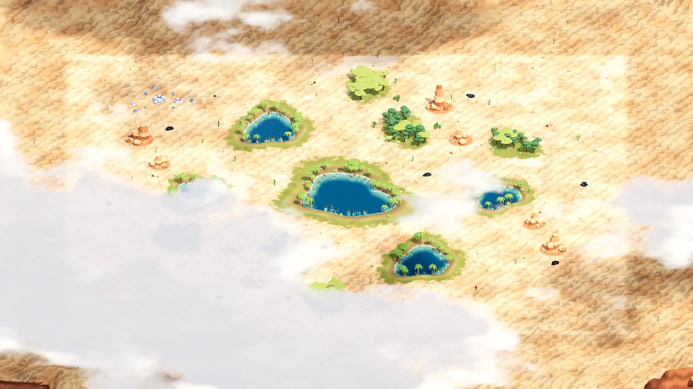
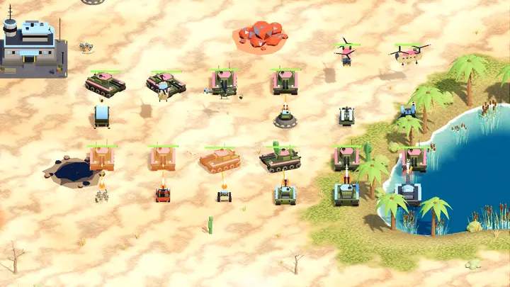
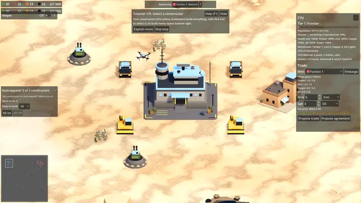
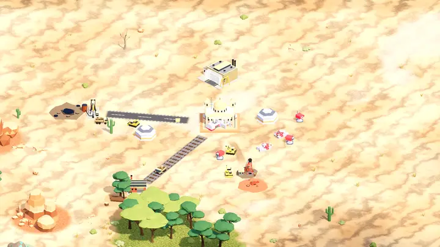
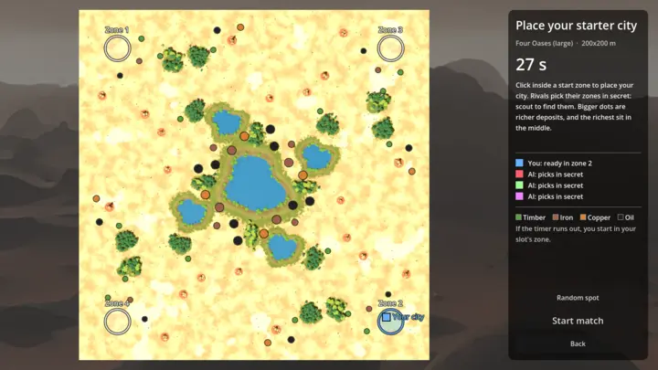
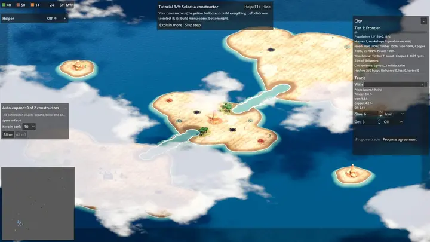
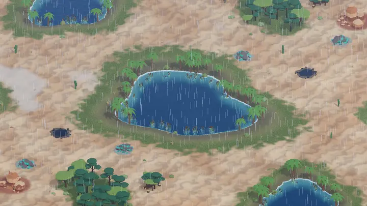
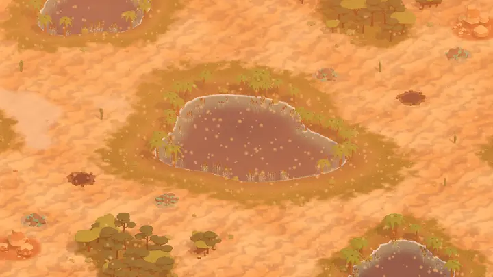
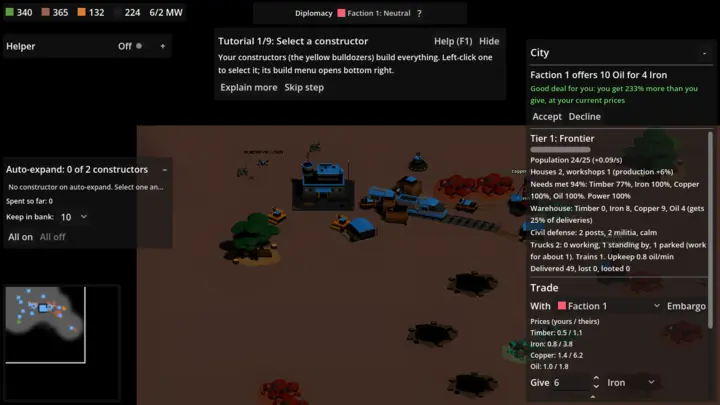
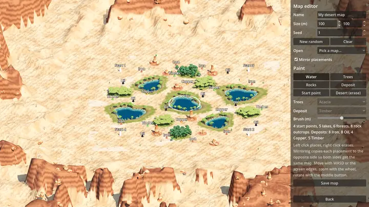

Open source real-time strategy · Godot 4.7
Ironbound The city builds itself.
You run what keeps it alive: mines and oil derricks, supply lines and power, trade with rival factions, and the army that holds the frontier.
The loop
Feed the city, and it feeds your war
You never place a house. Every delivery that reaches your command center feeds citizens, and a fed, powered city grows, builds workshops and earns science.
Dig
Constructors put lumber mills, mines and oil derricks next to deposits. Deposits run dry, so you keep expanding.
Deliver
Haulers drive goods home along supply lines. Goods count only when they arrive, and raiders hunt the trucks.
The city builds
Citizens eat what you deliver. The city grows from Frontier to Industrial at 150 science and to Electric at 450.
Deal
Swap surplus with other factions by caravan. Trade grows the city faster than digging alone.
Hold the line
New tiers unlock tanks, artillery, gunships and drones to guard your routes and break your rivals.
- Timber
- Iron
- Copper
- Oil
Every match
Watch your city rise
Pick your start zone on the map before the timer runs out, then watch builders raise your command center. From there the city keeps building on its own as long as you keep it supplied.
Seven desert maps, from a duel on Twin Basins to four-player Four Oases, plus island maps where amphibious units cross the water.
Screenshots
From the current test build


















What is in the game
Built so far
Everything below runs in the current test build. See the changelog for when each part landed and the roadmap for what comes next.
Economy CRATE 01
- Four commodities with deposits that run dry
- Haulers on supply lines, with a job board so trucks always find work
- Power grid with plants, pylons and blackouts
- Dirt tracks, paved roads, and trains that lay their own rail
- Storage yards and conveyors; recycle surplus trucks for 75% back
- Constructors that auto-expand your economy on their own
City and trade CRATE 02
- A city that grows from deliveries through three tiers
- Trade offers with a fair-price verdict, agreements and embargoes
- Caravans that can be raided
- Diplomacy: war, non-aggression pacts and alliances
- Civil defense and militia when the city is attacked
Army CRATE 03
- Tanks, heavy tanks, artillery, raiders, scout buggies, missile trucks, helicopters, gunships and drones
- Drones that must land at airports to refuel
- Line drag, fight, patrol, guard, retreat, fire stances and Shift queues
- Units that steer around each other instead of jamming
- Visible weapon fire, war sounds and a voice for every unit type
Matches and AI CRATE 04
- Rival AIs with play styles and difficulty levels
- AI armies that hold defence zones and raid supply lines
- Pick your colour, your start zone and each AI's difficulty
- Guided or Raw match rules: tutorial, helper AI and auto-build on or off
- Unit cap, city size caps and a 45-minute match clock with a score
World CRATE 05
- Desert maps with oases, forests, canyons and fair start zones
- Water, islands and amphibious units
- Rain, sandstorms, drifting clouds and their shadows
- In-game map editor
- Ambient soundscape made from scratch
Help and tools CRATE 06
- Step-by-step tutorial, hints and an F1 manual
- Opt-in helper AI that runs the economy and never attacks
- Crash and freeze reports you choose to send
- Units, maps and resources defined in JSON, ready to mod
- A play harness that tests matches from scripts
Coming next
Two factions, two ways to win
The Foundry League builds heavy, tracked and fortified. The Sandline Syndicate trades and raids on wheels. Meet the factions.
Download Ironbound
Latest releaseThe first public build is not out yet. The buttons open the releases page on GitHub, where it will appear.
Free, no account, no installer: unzip and play. Run from source · All releases